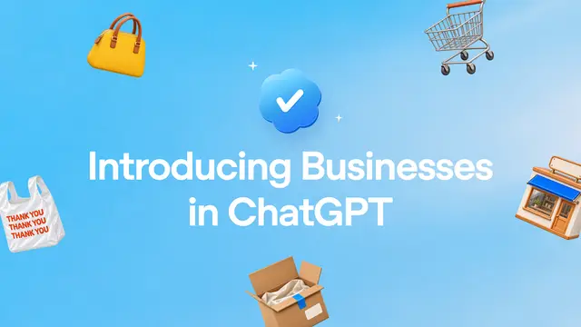

#chatgpt
OpenAI、「Businesses in ChatGPT」をベータ公開 企業がChatGPT上の自社情報を管理し、専用AIエージェントで顧客対応

OpenAIは2026年11月10日、企業がChatGPT内での自社の見え方を管理できる新機能「Businesses in ChatGPT」をベータ版として発表しました。週12億人が利用するとされるChatGPTを、企業と消費者をつなぐ接点として本格的に位置づける動きです。
記事で取り上げている点
- Business Hub：プロフィールの取得と可視化
- Business Agents：企業専用の対話エージェント
- 広告との連携と中立性の担保
- 業界への影響
- 今後の展望
一次情報（出典） openai.com